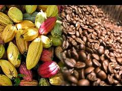
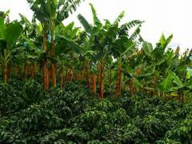

Café orgánico
Granos cultivados con prácticas sostenibles, aroma intenso y sabor balanceado.

Granos cultivados con prácticas sostenibles, aroma intenso y sabor balanceado.

Fresco y nutritivo, base de la alimentación local y de gran calidad.
La Feria Digital de la Vereda El Progreso es un espacio para mostrar la riqueza agrícola, los logros educativos y la unión comunitaria. Aquí encontrarás productos locales, fotografías de nuestras tradiciones y proyectos escolares destacados.